Download this map for Generals Zero Hour
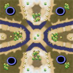 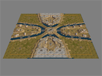 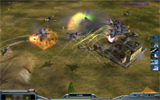 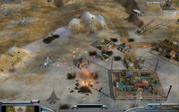 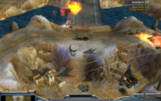 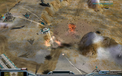 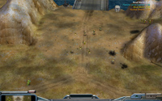 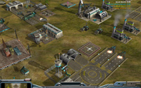 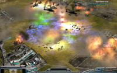 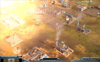 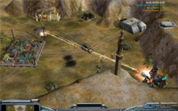 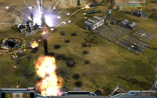 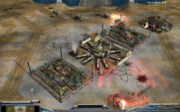
This is a large (450x450) 4-player map optimized for 2 vs 2 play.
The map is based on an original scetch by my cousin Minken!
The layout is quite complicated. Have a look at the screen shots!
Main features:
- Four bases, one in each corner.
- Four expansion areas with money crates, tech buildings, GLL Stealth stashs, and supplies.
- Central plateau scud storm and two supplies.
- Strategically placed bunkers and gun towers.
Lots of them as well as tech buildings and some interesting bonuses. The center of the map holds two supply docks and one demolition scud storm just waiting to be captured.
Works very well with any computer-controlled player. No lag!
Optimized for Advanced AI Mod for C&C Generals: Zero Hour v0.98